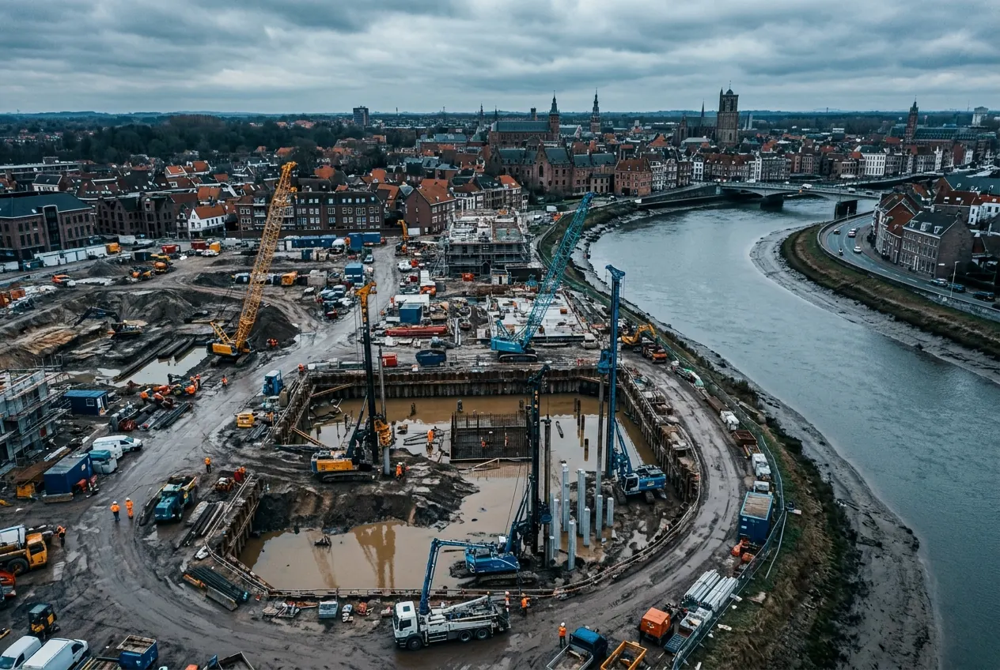
Жилой комплекс · 4,2 га
Квартал на слабых грунтах у реки
Геодезия, геология и экология одним договором. 46 скважин, отчёт принят экспертизой без замечаний по грунтам.
- Срок
- 34 дня
- Скважин
- 46
59.9386° N · 30.3141° E · H 12,4 м
Инженерные изыскания для проектирования и строительства: геодезия, геология, экология, лазерное сканирование. Сдаём отчёт, который проходит экспертизу, и сопровождаем до положительного заключения.
Рельеф по горизонталям через 1 м
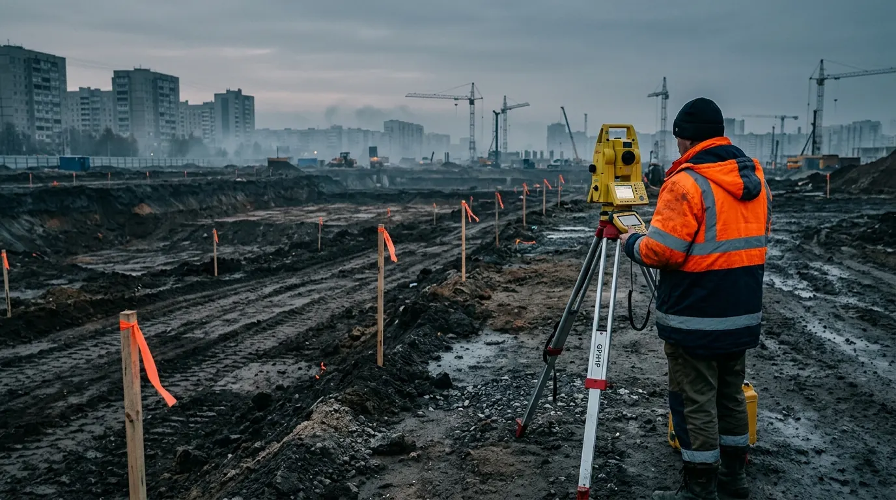
О компании
«Изолиния» начиналась в 2008 году с двух геодезистов и одного тахеометра. Сегодня это 140 инженеров, своя грунтовая лаборатория и парк приборов с ежегодной поверкой. Работы не перепродаём субподрядчикам: от первой точки на местности до ответа экспертизе объект ведёт одна команда.
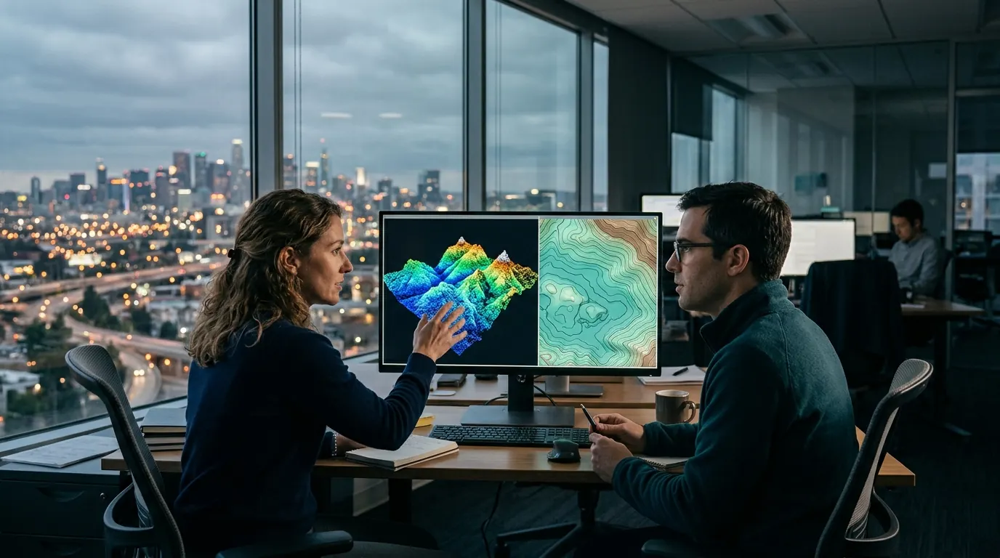
Услуги
Один подрядчик, одна программа работ, один ответственный инженер. Вы не сводите отчёты трёх организаций и не ловите противоречия между ними.
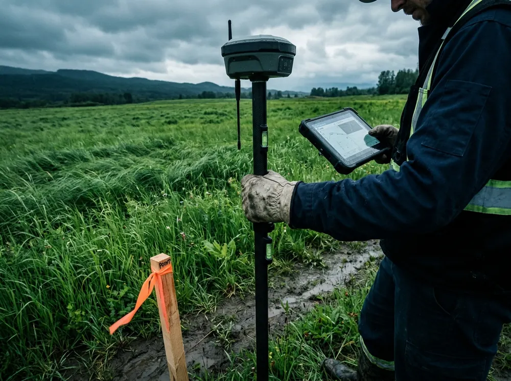
Топографическая съёмка М 1:500–1:2000, съёмка подземных коммуникаций с согласованием в эксплуатирующих организациях, вынос осей в натуру.
от 5 рабочих дней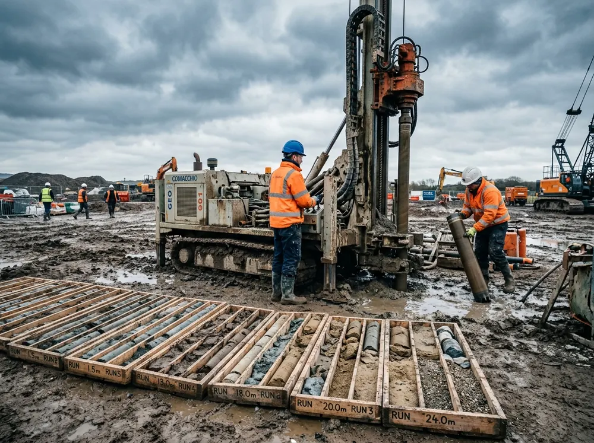
Бурение скважин, статическое зондирование, лабораторные испытания грунтов.
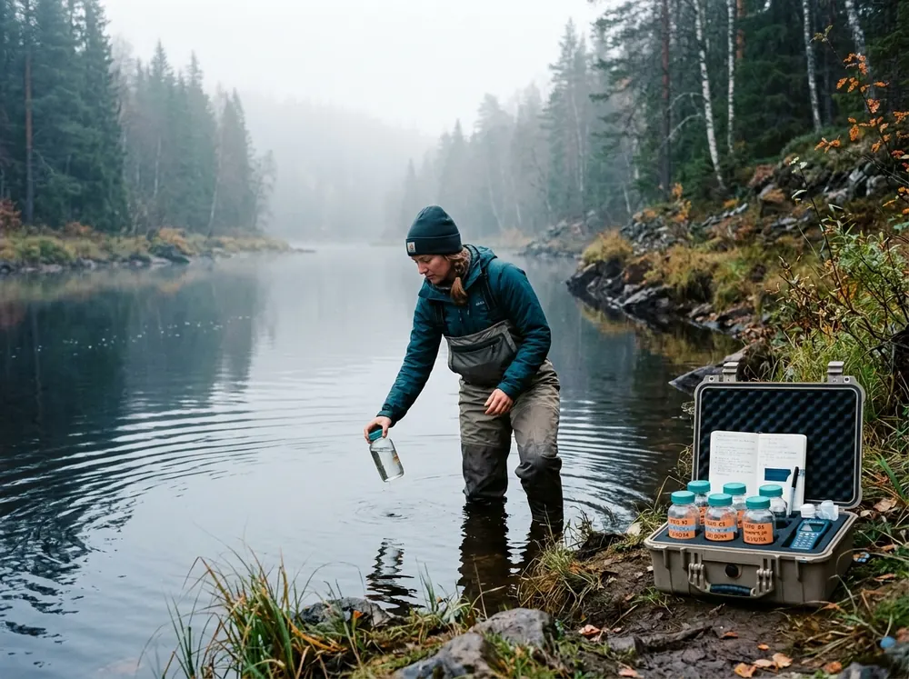
Радиационное обследование, пробы почвы, воды и воздуха, шум.
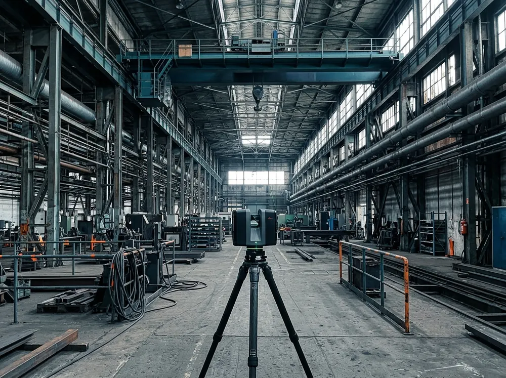
Облако точек фасадов и цехов, обмерные чертежи, модель для реконструкции.
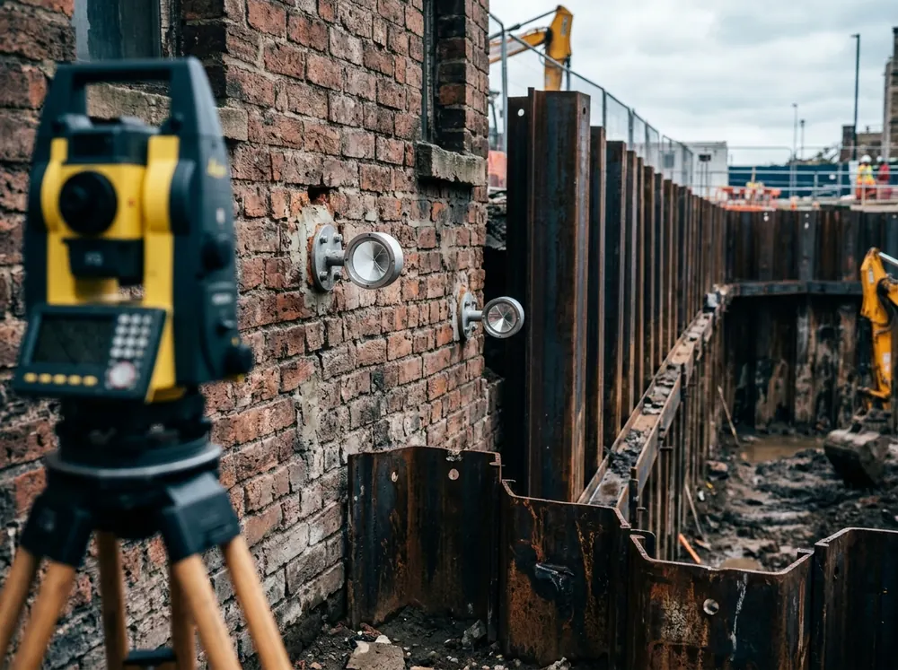
Осадки и крены зданий рядом со стройкой, отчёт после каждого цикла.
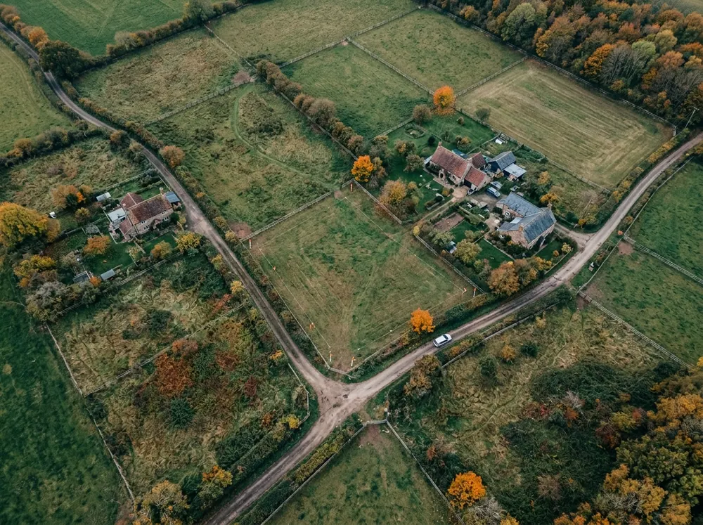
Межевой и технический планы, схема расположения участка. Готовим документы для постановки на учёт по результатам той же съёмки – без повторного выезда.
Обсудить объектОтрасли
Выберите свою роль, и увидите, что именно получите от нас.
−3 недели к сроку, когда геология и геодезия идут параллельно
1 инженер отвечает за весь комплект изысканий
0 часов простоя производства на время съёмки
до 40 км трассы в неделю с аэросъёмкой
Как работаем
Смотрим участок по карте и архивам, помогаем составить техническое задание.
1 деньФиксируем объёмы, цену и сроки в договоре. Цена не растёт после выезда.
2–3 дняСвоё оборудование и бригады. Фото и сводка с объекта каждый день.
от 3 днейЛаборатория, расчёты, чертежи и модель в нужных форматах.
от 5 днейСдаём отчёт и отвечаем на замечания до положительного заключения.
включеноПроекты

Жилой комплекс · 4,2 га
Геодезия, геология и экология одним договором. 46 скважин, отчёт принят экспертизой без замечаний по грунтам.
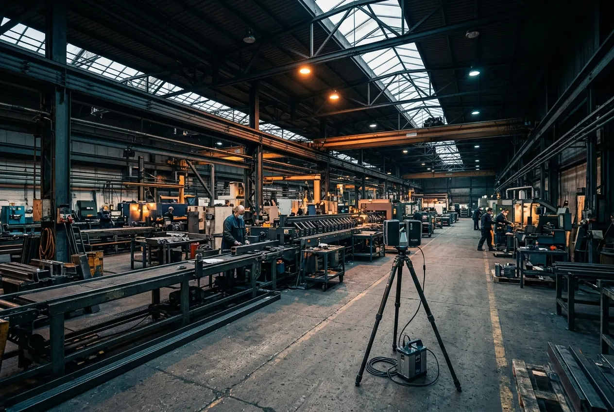
Промышленность · 18 000 м²
Облако точек на 1,2 млрд измерений, модель металлоконструкций для реконструкции кровли.
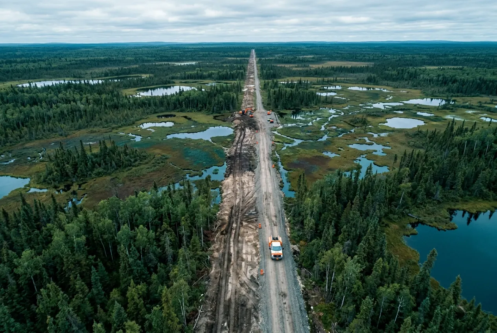
Инфраструктура · 62 км
Аэросъёмка с БПЛА, наземная съёмка переходов через реки и дороги, инженерная геология по всей трассе.
Вопросы
Зависит от площади, масштаба съёмки, числа скважин и региона. Пришлите кадастровый номер или координаты участка – смету пришлём за один рабочий день.
Для участка до 5 га обычно 3–6 недель от договора до отчёта. Геодезию и геологию ведём параллельно, чтобы не терять время.
Отвечаем на замечания и исправляем отчёт без доплаты, пока не будет положительного заключения.
Да, полевые бригады выезжают в 38 регионов. Стоимость выезда считаем сразу в смете.
Отчёт в PDF и XML для экспертизы, чертежи в DWG, модель рельефа и облака точек в форматах вашего ПО.
Смета за 1 день
Инженер посмотрит участок по карте, уточнит задачу и пришлёт смету с программой работ.